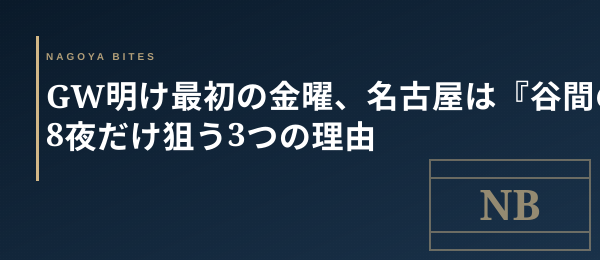

🗓 GW明け短信
GW明け最初の金曜、名古屋は『谷間の予約』が一気に取れる — 業界人が5/8夜だけ狙う3つの理由
5/6で大型連休が終わり、街は通常運転へ向かう。しかし業界人にとって5/8(金)はただの金曜ではない。連休疲れで予約が動かず、翌週から本格復帰する前の『谷間夜』。客単価8,000〜12,000円のミドルレンジに、普段なら埋まる席が空く。この一夜だけの空気を3つの観点から整理する。

01. 予約サイトに『前週の振替』が乗らない夜
連休明け最初の金曜は、業務側が連休疲れで動きが鈍い。前週GW中に取り損ねた予約客は『今週はもういい、来週から』と先送りし、翌週の常連は『連休直後で財布が締まっている』と動かない。結果、5/8夜は予約サイトに残席が突発的に増える。普段なら20時台が埋まる店でも、19:30〜21:00の中途半端な時間帯に2名席が浮く。狙うなら金曜18時を過ぎてからの『当日空き』チェックが効く。
02. 客単価8,000〜12,000円が緩む
連休中は『せっかくだから』で客単価15,000円超のハレ予約が動いた。だが連休直後は反動で財布が締まる。一方、6,000円以下の居酒屋帯は普段の金曜需要に戻るのが早い。中間の8,000〜12,000円——アラカルト+一杯ずつのワインや日本酒で組む層——が、最も需要が遅れて戻る価格帯。コース予約困難店でも、この一夜だけは2名席が当日でも引っかかる。
03. 店側が『顧客対応モード』に戻る金曜
連休営業を回した店は、5/8をリハビリ営業と捉えている。回転よりも丁寧な接客に意識が戻る金曜。新しい料理人の練習日として通常メニューを軽くアレンジする店もあり、業界人はこの夜の『遊び』を楽しむ。連休明け金曜は『取れる席』ではなく『取れる空気』を取りに行く夜。週末の混雑が戻る前の、静かな名古屋を一夜だけ味わえる。
Inside Perspective — 業界人の目利き
- (業界人視点を記述)